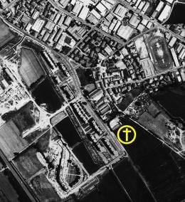

Cei Conferenza episcopale italiana
da pubblicazione allegata al n.671
di "Casabella" settembre 1999
|
Cei Conferenza episcopale italiana |
|
|  | Progetti per la Chiesa di Santa Maria in Zivido di San Giuliano Milanesecomposizione della giuria progettistiBellini Mario |
tuttozivido - indice chiesa - home

sito di propriet� della Associazione Culturale
Zivido
webmaster@aczivido.net